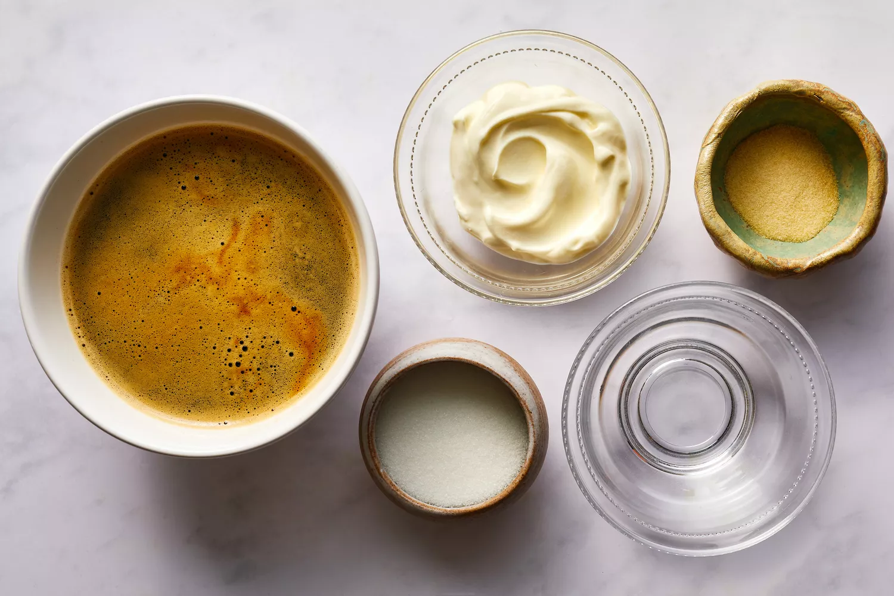
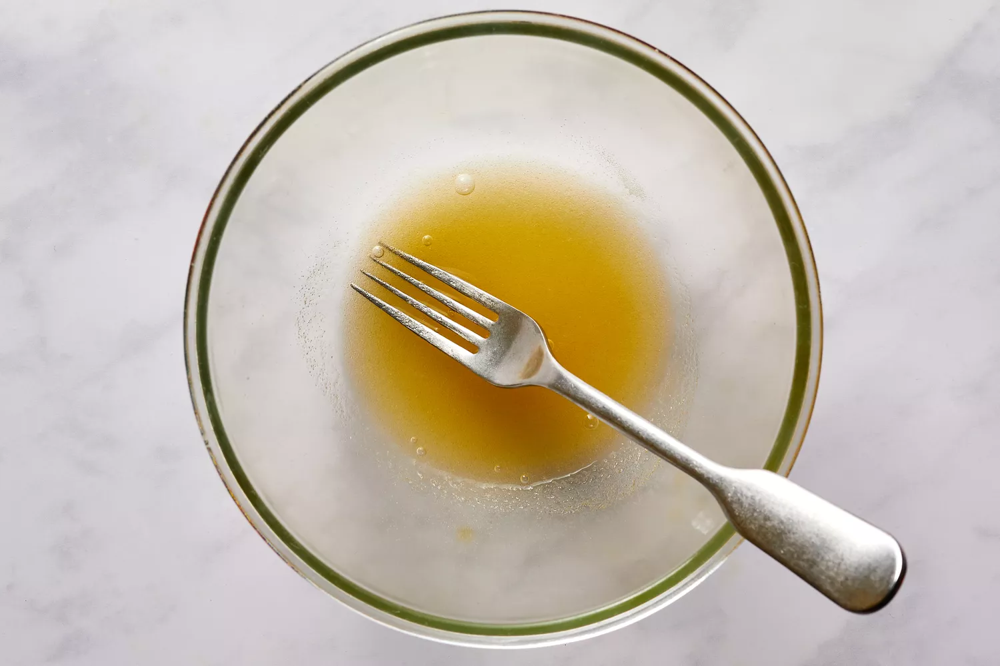
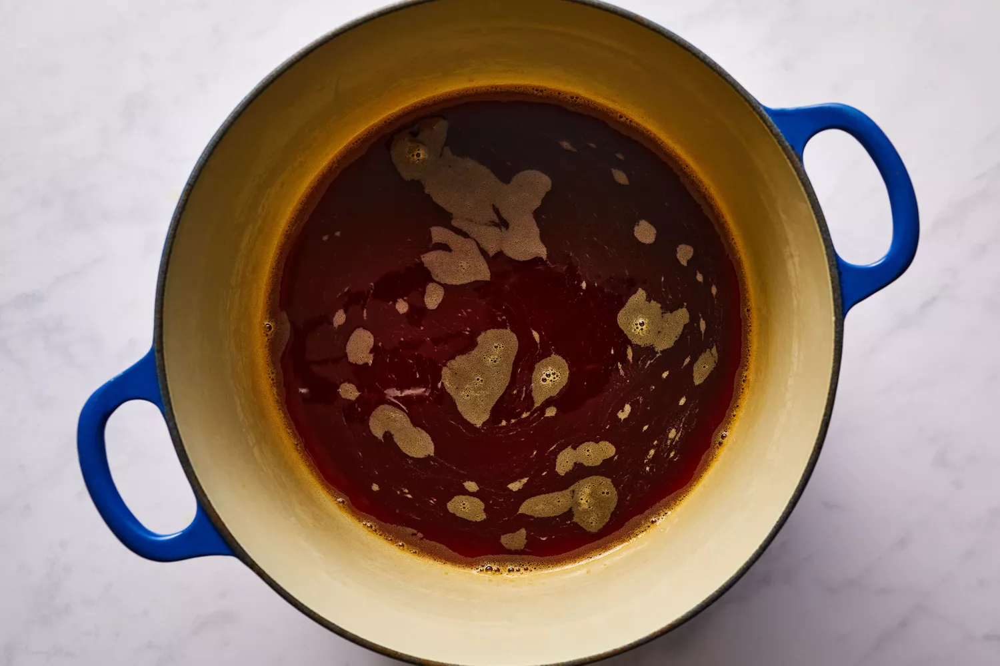
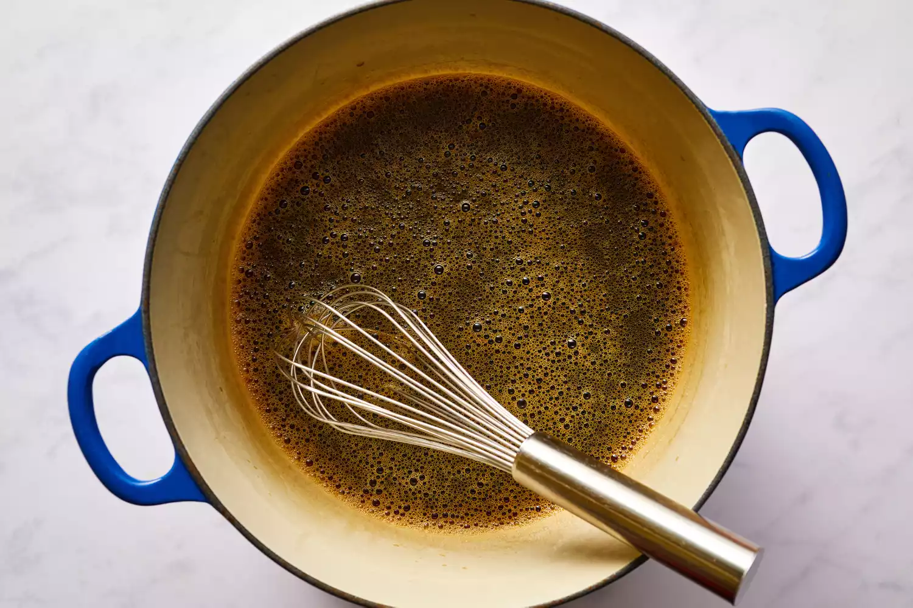
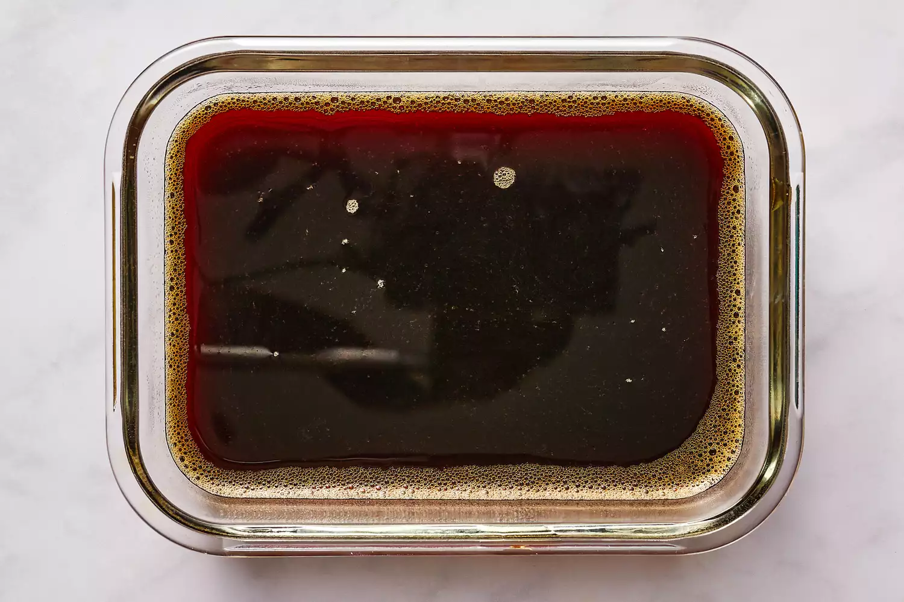
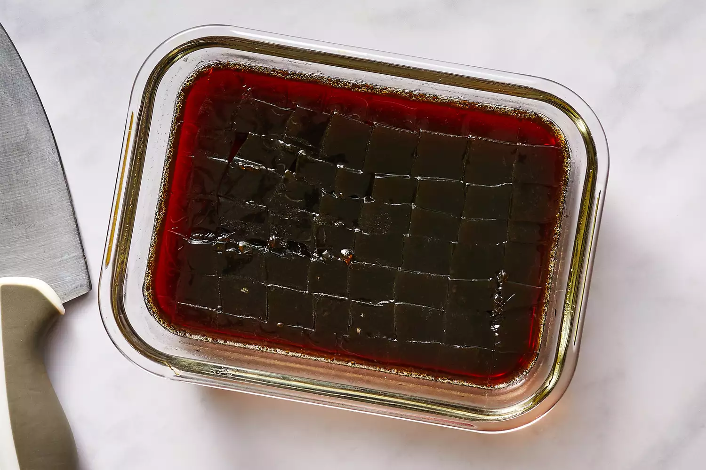
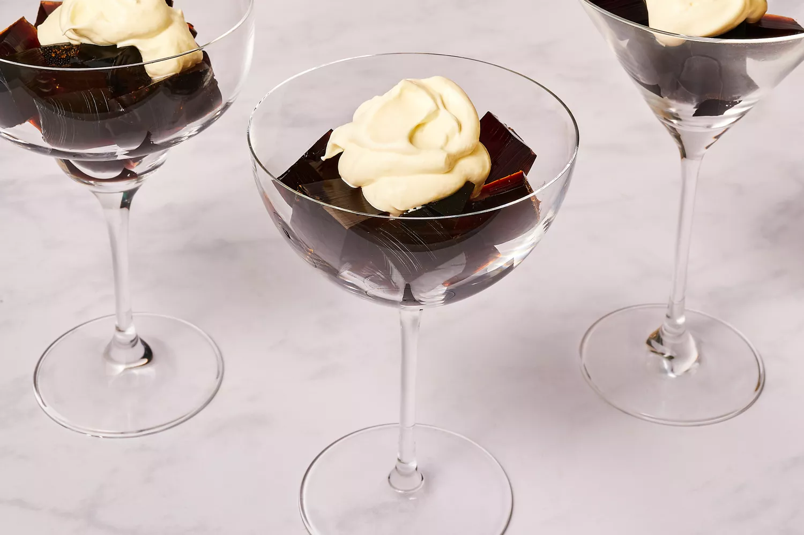

Coffee jelly (コーヒーゼリー) is very easy to make: Sweeten strong coffee while heating it, then add a mixture of powdered gelatin and water and let it set up in the fridge. This recipe creates coffee jelly that is light and not too sweet, though you can adjust the sweetness to your liking. It's perfect for dessert, especially following a Japanese dinner in place of or alongside a cup of coffee. It's known as a refreshing summer treat, but feel free to enjoy it all year long.
PREP: 5 mins
COOK: 5 mins
COOL & SET: 5 hrs 15 mins
TOTAL TIME: 5 hrs 25 mins
SERVINGS: 4 servings
YIELD: 2 cups
Gather the ingredients.
In a small bowl, combine the gelatin powder and water.
Place the brewed coffee and sugar in a medium saucepan and bring to a near boil over medium-high heat.
Turn off the heat, and whisk in the gelatin mixture until it dissolves. Set aside to cool, about 10 to 15 minutes.
Pour the coffee gelatin mixture into a shallow baking dish (8- or 9-inch square or 11 x 7 inches) and refrigerate until set, about 5 hours.
Once the coffee jelly has set, cut the gelatin into 1/2-inch cubes.
Spoon the cubes into individual serving dishes and top with whipped cream, if desired.
